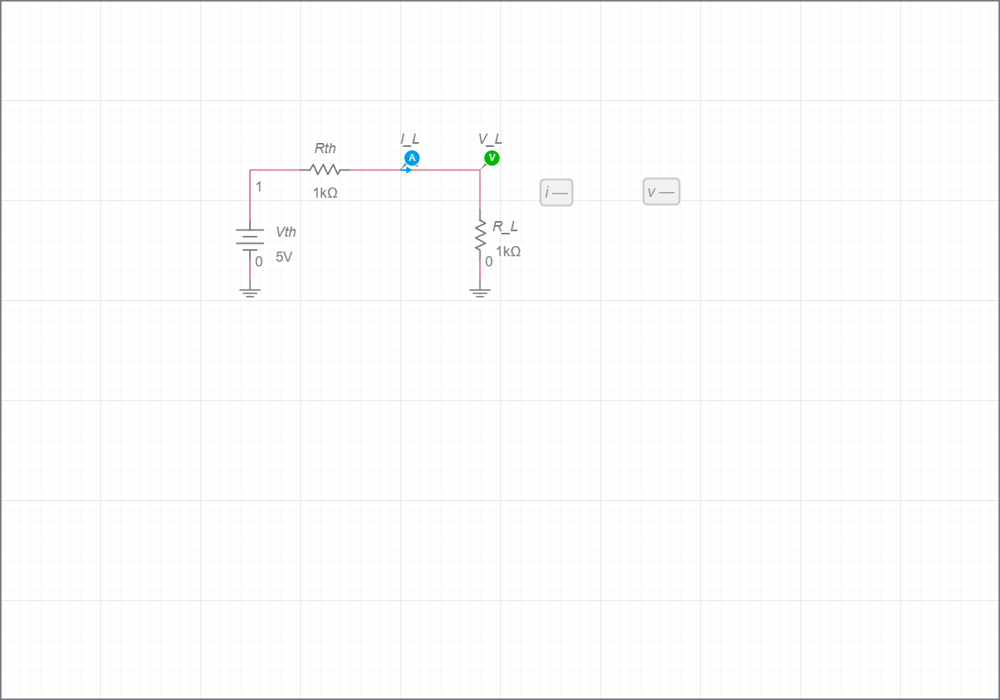

בחלק זה נבצע מדידות בשני מצבי קיצון של המעגל—מצב חוג פתוח ומצב קצר מוחלט—על מנת לקבוע את הפרמטרים של מעגל תבנין השקול: מתח תבנין (\(V_{TH}\)) והתנגדות תבנין (\(R_{TH}\)).
בחלק זה נמדוד מתח חוג פתוח וזרם קצר על מנת לחשב את שקול תבנין (לפרטים נוספים ראו את מדריך ציוד המדידה במודל):

מדידת מתח ריקם וזרם קצר בין הדקי העומס
הסימולציה מציגה את מעגל העבודה לחלק ב. השתמשו בה כדי לבדוק מתח חוג פתוח, זרם קצר והתנהגות העומס לפני המדידה במעבדה.
לאחר חישוב \(R_{TH}\), חברו ערכי עומס שונים סביב הערך שחושב ובדקו היכן מתקבל הספק מרבי.
| \(R_L\) [\(\Omega\)] | \(V_L\) [V] | \(I_L\) [mA] | \(P_L=V_L \cdot I_L\) [mW] | הערה |
|---|---|---|---|---|
| \(0.5R_{TH}\) | ||||
| \(R_{TH}\) | צפוי הספק מרבי | |||
| \(2R_{TH}\) |
שימו לב: אם הזרם נרשם ב-mA, ההספק \(V \cdot mA\) מתקבל ב-mW.